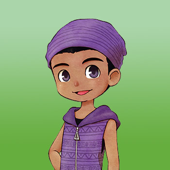

Kai



Kai es un visitante estacional de Mineral Town. Vendrá a la ciudad el 1 de verano y luego se irá el 1 de otoño. Durante el verano, Kai abrirá su Beach Café en la playa, donde podrás comprar comida para comer, como maíz asado y pizza. Por la noche es huésped de la posada de Dudley. Kai no tiene peleas con nadie, aunque Rick tiene un problema personal contra Kai.
El desafío de casarse con Kai es su ausencia del juego durante tres temporadas. Si bien no está disponible en la ciudad, los niveles de amistad y amor de Kai están en pausa. No puede ganar ni perder afecto a menos que resida físicamente en Mineral Town.
Después del matrimonio, Kai se quedará en la ciudad todo el año. Abrirá el snack bar en la playa todos los días de la semana excepto los domingos. En su día libre, Kai comenzará su día dentro de la granja, visitará la playa desde las 2:00 pm hasta las 5:00 pm y luego regresará a su granja.
| Cumpleaños | Verano 22 (primaria) o Verano 17 (alternativa) |
|---|
| Amistad extra | Gana +2500 al comprar un total de 5, 10, 15, 20 o 25 platos del menú de Kai. El agua no cuenta. |
|---|
| Rival | Popuri |
|---|
| Horario |
- El horario de Kai es el mismo durante la mayor parte de la semana. Comenzará el día arriba en la posada de Dudley y luego llegará a la playa a las 8 am. De 11:00 a 13:00 está en su tienda, luego vuelve a salir hasta las 17:00. Kai servirá otro período de comida desde las 5 p. m. hasta las 8:00 pm y luego regresará a la posada para pasar la noche.
- Los domingos se quedará en la posada, tomando un pequeño descanso para visitar la playa de 13:00 a 16:00 horas. Los domingos lluviosos, Kai se quedará en el interior de la posada todo el día.
|
|---|
Preferencias de regalo
La mejor forma de mejorar la amistad y el afecto es siempre regalar las cosas que le gusta una vez por dia.
Eventos del corazón
Cada evento que ocurra el jugador tendra que escoger entre dos respuesta en la que uno ayuda a conseguir muchos puntos y la otra suele ser neutral o quitar puntos.
Cuando el candidato tenga corazón naranja puedes proponerle matrimonio con la pluma azul y despues de la boda tendra un corazón rojo.
Evento de introducción
| Corazón | Requisitos | Mejor espuesta |
|---|
 |
- Camina desde la plaza Rosa hasta la playa.
- Puede ser Lunes, Miercoles o Viernes.
- 11:00 a 13:00 o 17:00 a 19:00
- Debe ser soleado
- Debe ser Verano
|
Opción 2: Los que viven en granjas de cristal... |
Evento del corazón Negro
| Corazón | Requisitos | Mejor respuesta |
|---|
 |
- Entra a la tienda de Kai.
- Puede ser Lunes, Miercoles o Viernes.
- 11:00 a 13:00 o 17:00 a 19:00
- Debe ser Verano
- Debe ser soleado
- Has visto el evento de Introducción
- Kai tiene un color de corazón negro (5.000 LP) o superior.
- Kai aceptó el trabajo en la bodega.
|
Opción 2: Toneladas de piñas. |
Evento del Corazón Púrpura
| Corazón | Requisitos | Mejor respuesta |
|---|
 |
- Camina desde la plaza Rosa hasta la playa.
- Debe ser Martes o Viernes.
- 13:00 a 17:00
- Debe ser soleado
- Tienes 50% o menos puntos de resistencia.
- Debe ser Verano
- Tener un espacio vacío para objetos en tu mochila.
- Has visto el evento de corazón negro
- Kai tiene un color de corazón púrpura (10.000 LP) o superior.
|
Opción 1: Está bien, si insistes. |
Evento del Corazón Azul
| Corazón | Requisitos | Mejor respuesta |
|---|
 |
- Camina desde la plaza Rosa hasta la playa.
- Puede ser Lunes, miércoles, jueves o Sábado.
- 9:00 am a 11:00 am
- Debe ser soleado
- Debe ser Verano
- Has visto el evento de corazón púrpura
- Kai tiene un color de corazón azul (20.000 LP) o superior.
|
Opción 1: "No dejes que esto te moleste" o "No te cambies por nadie". |
Evento del Corazón Amarillo
| Corazón | Requisitos | Mejor respuesta |
|---|
 |
- Camina desde la plaza Rosa hasta la playa.
- No debe ser Domingo
- 11:00 a 13:00 o 17:00 a 19:00
- Debe ser soleado
- Debe ser Verano
- Debe tener al menos 1 pollo en tu granja.
- Has visto el evento de corazón azul
- Le has regalado a Kai una flor preservada.
- Kai tiene un color de corazón amarillo (40.000 LP) o superior.
|
Opción 2: ¡Me inclino ante ti, santo del sustento! |
Evento del Corazón Naranja
| Corazón | Requisitos | Mejor respuesta |
|---|
 |
- Entra en la tienda de Jeff.
- No debe se Domingo ni Martes.
- 11:00 am a 1:00 pm
- Debe ser soleado
- Debe ser Verano
- Aún no has hablado con Jeff o Sasha ese día.
- Has visto el evento de corazón amarillo
- Kai tiene un color de corazón naranja (50.000 LP) o superior.
|
Opción 1: ¡Podríamos estar juntos! PARA SIEMPRE. |